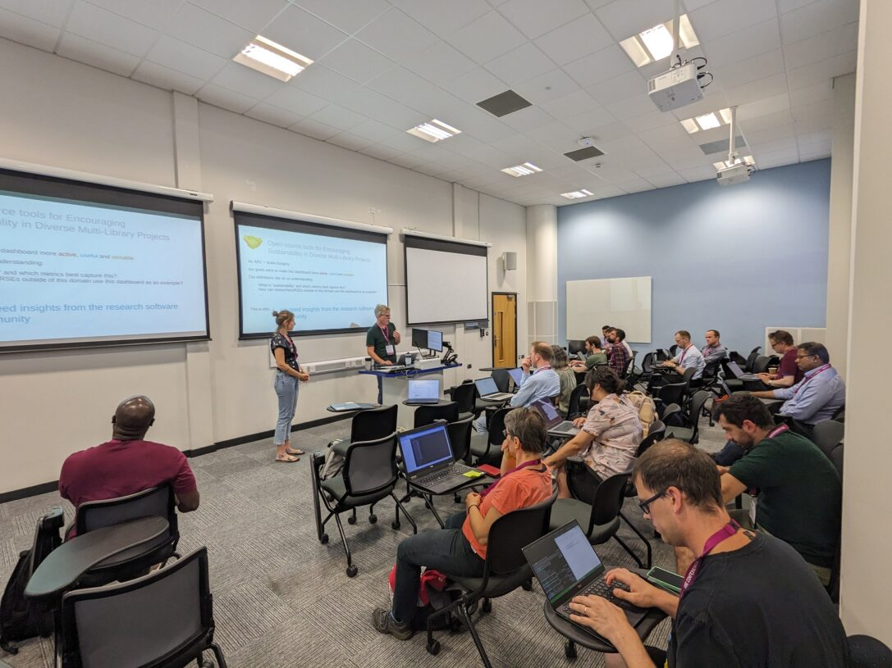

This work was made possible by UCL's Advanced Research Computing Centre through the Open Source Software Sustainability funding scheme and the Wellcome/EPSRC Centre for Interventional and Surgical Sciences (WEISS) (203145Z/16/Z).
Ozdemir, Yagmur Idil, Xochicale, Miguel, & Thompson, Stephen. (2023). Design and discussion of a (reusable) Sustainability Dashboard of Open Source Tools (1.0). RSLondonSouthEast, London, UK. Zenodo. https://doi.org/10.5281/zenodo.8337573

Ozdemir, Yagmur Idil, Xochicale, Miguel, & Thompson, Stephen. (2023). How to use and contribute to a software sustainability dashboard (1.0). RSE Conference 2023 (RSECon23), Swansea UK. Zenodo. https://doi.org/10.5281/zenodo.8337480